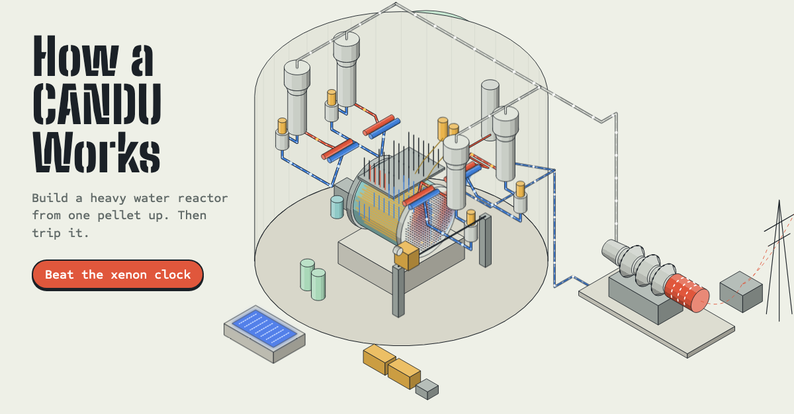
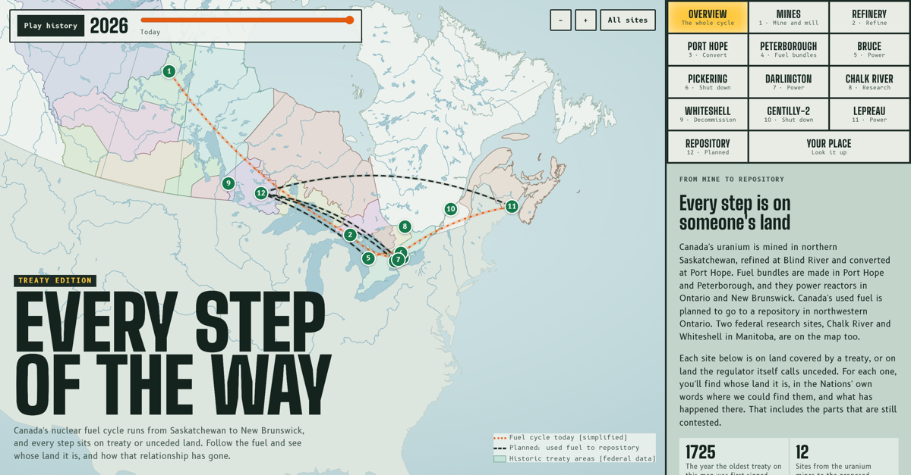

-

How a CANDU Works
Build a heavy water reactor from one fuel pellet up, then trip it and try to beat the xenon clock.
Open the demo → -

Every Step of the Way
Follow Canada's nuclear fuel from mine to repository, see whose treaty or unceded land each step is on, and play the history from 1725 to today.
Open the map → - More demos on the way.